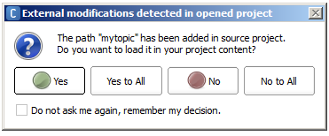

Project¶
What is a Project¶
The Project allows you to save on your computer, in one folder, all the files and content necessary to create an Application:
- Behavior(s),
- Dialog topic(s),
- Planar Move, and
- Attached file(s) (music, C++ module, etc.).
How to manage Project¶
The File menu allows you to:
- Create, open and save a Project;
- Import a Project from a CRG or a former Directory,
- Add or import new content to the current Project,
- Modify its Project Properties,
- Export the project as a CRG,
- Build it into an Application.
The Project files panel allows you to:
- Modify its Project Properties,
- Add new content to the current Project,
- Edit, delete and organize in sub-folders the content and files attached to the current Project.
Tips: external management¶
You can also modify the content of the Project using your favorite file management tools.
For example, to import a Dialog topic from a Project to another:
| Step | Action |
|---|---|
| Copy/Paste the folder containing the Dialog topic from one Project folder to another. | |
Coming back to Choregraphe, accept the imported files. Note If you pressed No or No to All, this is not final. You still can import your files manually into your project. You just have to select Import content > Files... or Import content > Folder... from the File menu, browse into your project folder, and import the desired files or folder. |
{kind=link}
Project available formats¶
| Extension | Usage |
|---|---|
| .pml | Storage format A unique file with PML extension located at the root folder of your project references all the Project files and contents. |
| .pkg | Publication format The Package is a binary format used to publish an Application. For further details, see: Building an Application Package. |
| .crg | Exchange Format The CRG file format stores the project in a single compressed file. The project CRG format is an easy way to archive a project and / or deliver it to someone else. |
Porting a 1.14 Project¶
1. Importing 1.14 projects files¶
To import a Project created with a former version of Choregraphe:
{kind=link}
{kind=link}
2. Cleaning a 1.14 Project¶
Once imported, your 1.14 Project needs to take advantage of the new features:
Check your Python code¶
Track deprecated APIs:
The main evolution impacted ALMotion: “walk” becomes “move” in order to support all the Aldebaran robots.
To see the whole list of deprecated methods and events, see:
NAOqi API & SDks 2.1 Release note.
Tip: CTRL+F on the page allows you to search for ‘deprecated’ key word, so you can focus on the cleaning before discovering all the new features.
Cut/replace the deprecated boxes¶
See the full list of boxes to upgrade in the Choregraphe Release Note: Improved boxes.
3. To support the new Aldebaran Cloud¶
Check the Properties¶
Note that the Project has now properties allowing you to edit directly the manifest of your Application.
Pay attention to the unique Application ID, automatically generated by Choregraphe. If needed, this Application ID can be changed.
For further details, see: Project Properties.
4. To support the new NAO V5¶
Most of the dances created with version 1.14.5 still run on NAO V4 and even on V5.
But, as the masses slightly evolved, balance breakpoints has also changed.
So for example, if your NAO stands on one foot, or strikes a pose at the limit of its possibilities (in terms of balance), then a NAO V5 may fall.
Check tune your dances and extreme motions¶
| Step | Action |
|---|---|
| Make sure you have cut/replaced all the deprecated boxes listed here: Improved boxes. | |
| Test your Timelines using NAO V5 Simulated robots. | |
If your animation fails on V5, you can:
|